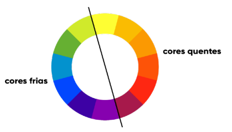
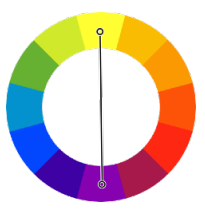
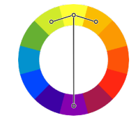
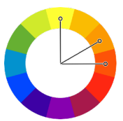
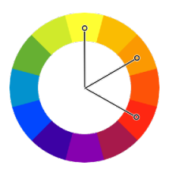
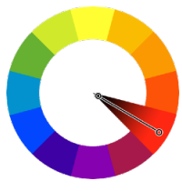

A imagem abaixo representa a temperatura das cores, onde do lado direto são as cores quentes e do lado esquerdo as cores frias
São aquelas que apresentam o maior contraste entre si. Estão localizadas do lado oposto no Círculo cromático
Diferente das complementares, que estão do lado extremo oposto no círculo cromático, as cores análogas são aquelas que são imediatamente vizinhas entre si

Esse tipo é uma combinação dos dois tipos antiores. Essa técnica quebra um pouco o ritmo semelhante das cores análogas, adicionando uma cor que cria um grande contraste com as três análogas
Neste tipo de harmonia, escolhemos duas cores análogas consecutivas e depois pulamos uma terceira cor (em qualquer direção) e escolhemos a quarta. Essa técnica, conseguimos um resultado parecido com das cores análogas simples, mas com um pouco mais de contraste sem ter que escolher uma cor complementar
Uma técnica menos usada em harmonia, já que às vezes não funciona tão bem assim. Vamos escolher a primeira cor e depois mais duas com intervaldo constante entre elas
Técnica bastante utilizada e que garante uma grande riqueza de cores, onde escolhemos três pontos equidistantes no círculo cromático. Essa técnica gera sempre um triângulo equilátero

Harmonia diferente das anteiores, que usa apenas uma cor e varia apenas a sua saturação e o seu brilho. Essa combinação, geralmente gera pouco contraste entre as cores escolhidas, mas acaba gerando um resultado visual bem agradável aos olhos, conhecido como "degradê"
